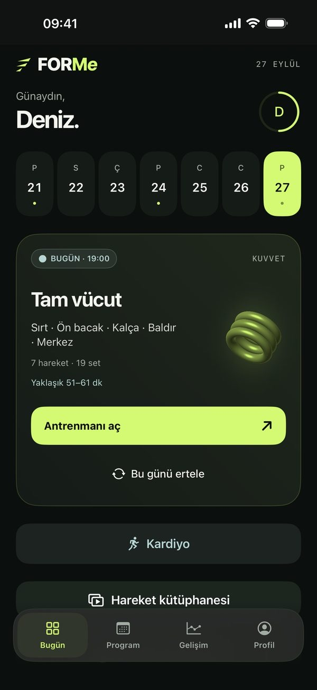

Destek merkezi
Nasıl yardımcı olabiliriz?
FORMe, kuvvet, kardiyo ve esneme antrenmanlarını hedefine göre planlayan iPhone ve Apple Watch uygulamasıdır. Sorunun cevabını aşağıda bulamazsan bize yaz; seve seve yardımcı oluruz.

Konular
En sık sorulan başlıklara hızlıca git.
Sık sorulan sorular
Başlarken
Programımı nasıl oluştururum?
İlk açılışta hedefini, deneyimini, günlerini ve ekipmanını seç. FORMe programını bu tercihlere göre hazırlar. Kısa turu daha sonra Profil → FORMe’yi keşfet ile yeniden açabilirsin.
Mevcut programı Program → Programını güncelle ile düzenle. Profilde deneyim, öncelik ve gün değişikliklerini kaydet; programını etkileyen değişikliklerde sunulan önizlemeyi inceleyerek onayla. Tamamlanmış antrenmanların geçmiş olarak korunur.
Hareketleri nereden inceleyebilirim?
Profil → Hareket kütüphanesi bölümünde kuvvet, kardiyo ve esneme hareketlerini inceleyebilirsin. Güncel kütüphanede 116 kuvvet, 11 kardiyo ve 16 esneme hareketi bulunur. Zorluk, ekipman ve kas grubu bilgileri program seçimlerinde kullanılır.
Plank gibi süreli hareketlerde saniye kaydı kullanılır; tek taraflı hareketlerde ekrandaki taraf yönergesini izle.
Ekipman, salon ve öncelik seçimlerim programı nasıl etkiler?
Profil → Ekipmanlarım alanında gerçekten kullanabildiğin kuvvet ve kardiyo ekipmanlarını seç. Ekipmansız tercih makineleri veya ağırlıkları kullanılabilir saymaz; step, Nordic sabitleyici ve göğüs press makinesi gibi destekler de ayrı seçimlerdir.
Profil → Ağırlıklarım ve salonlarım ve Önceliğin alanları yük, antrenman yeri ve hedef uyarlamalarını etkiler. Koç önerileri ve yeni programlar; kayıtlı deneyim, hedef, uygun ekipman, hareket tercihleri ve mevcut geçmişe göre oluşturulur. Her programda tüm hareketlerin kullanılması amaçlanmaz; uygun olanlar arasından çeşitlilik sağlanır.
Kuvvet ve kardiyo aynı gün nasıl görünür?
Aynı gün kuvvet ve kardiyo olduğunda kuvvet kartı üstte ve tam boyutta, kardiyo kartı altında daha küçük görünür. Erteleme veya atlama işlemini geri aldığında da bu sıra korunur. O gün yalnızca kardiyo varsa tam boy kart kullanılabilir.
Kardiyo hareketimi değiştirebilir miyim?
Planlanmış veya atlanmış kardiyo antrenmanını aç ve Hareketi değiştir seçeneğine dokun. Ekipman ve açık hava tercihlerine uygun etkinliklerden birini seç, sonra Bu antrenmanı güncelle ile onayla.
Yalnızca seçtiğin antrenmanın hareketi değişir; tarihi, süresi, aşamaları ve notları korunur. Başka bir ekipman seçmek için Profil → Ekipmanlarım alanını kullan. Devam eden veya tamamlanmış kardiyo kayıtları bu işlemle değiştirilmez.
Program olmadan antrenman yapabilir miyim?
Evet. Program oluşturmadan da kuvvet, kardiyo ve esneme seansı başlatabilirsin. Programın varken dinlenme gününde antrenman yapmak istersen Bugün → Yine de antrenman yapmak istiyorum seçeneği, toparlanmış kas gruplarına göre hazır bir antrenman önerir. Ekipmanlı veya ekipmansız seçebilir, hareketleri değiştirebilirsin.
Bugün antrenman yapamayacağım. Ne yapmalıyım?
Kuvvet antrenmanını aç ve Ertele’ye dokun. Programına bağlı bir antrenmanda kalan programı hedeflerine göre yeniden dengelemeyi seçebilirsin. Değişiklikleri onaylamadan önce önizlemeyi incele.
Program haftaya sığmıyorsa bir gün ekleme, seans başına daha fazla kas grubuna izin verme veya yalnızca taşıma seçenekleri gösterilir. Kardiyoda Günü veya saati değiştir seçeneğini kullan; kuvvet programın korunur, aynı güne denk gelen diğer kardiyo bir sonraki uygun güne kayabilir. Bağımsız kuvvet antrenmanını taşımak da programı yeniden dengelemez.
Programımı silip yeniden başlamak istiyorum.
Program → sağ üstteki ⋯ → Programı sil yolunu kullan. Programdaki planlanmış kuvvet antrenmanları kaldırılır; profilin, tamamlanmış kayıtların ve kendi eklediğin bağımsız/kardiyo antrenmanların korunur. Ardından yeni program oluşturabilirsin.
Profilini ve kuvvet/kardiyo geçmişini de sıfırlamak için Profil → ⋯ → Profil ve antrenmanları sıfırla seçeneği ayrıdır. Esneme kayıtları, kişisel videolar ve Apple Sağlık kayıtları bu sıfırlamayla silinmez. Önce yedek al.
Apple Watch
FORMe’yi saatimde nasıl kullanırım?
FORMe’yi iPhone’a yüklediğinde eşlenmiş Apple Watch’ta da kullanılabilir. Saatte görünmüyorsa iPhone’daki Watch uygulamasından yükleyebilirsin. İlk açılışta antrenman ve Sağlık izinlerini ver.
Saatte Antrenmanı aç ile günün hareketlerini önizleyebilir, Hemen başlat ile doğrudan başlayabilirsin.
Setler otomatik olarak nasıl kaydedilir?
Profil → Cihazlar → Apple Watch bölümünde otomatik set takibini aç. Uygun izinlerle saat, antrenman sırasında bilek hareketini ve kullanılabilir nabız verisini değerlendirerek set sınırlarını tahmin eder.
Bu bir tahmindir; hareketin kusursuz yapıldığını doğrulamaz ve her sette tekrar/ağırlık bilgisi üretmez. Eksik veya yanlış kayıtları antrenman detayında kontrol edip düzelt. Otomatik kayıt kapalıyken setlerini elle tamamlayabilirsin.
Saat ile telefon eşitlenmiyor.
İki cihazda da FORMe’yi aç; Bluetooth ve Wi-Fi’ın açık olduğunu kontrol et. Saatte devam eden bir antrenman varsa uygulamayı silme: bağlantı geri geldiğinde kayıtların telefona aktarılır.
Apple Sağlık
Sağlık izinlerini nasıl değiştiririm?
iPhone’daki Sağlık → profil resmin → Gizlilik → Uygulamalar (veya Uygulamalar ve Servisler) → FORMe bölümünü aç. İzin verdiğin antrenman, nabız ve aktif enerji erişimini buradan yönetebilirsin. Menü adları iOS sürümüne göre değişebilir.
Apple’ın Sağlık verilerini yönetme rehberi güncel adımları açıklar.
FORMe tıbbi bir değerlendirme yapar mı?
Hayır. FORMe bir antrenman uygulamasıdır; tıbbi cihaz değildir ve tanı koymaz. Nabız uyarıları isteğe bağlıdır. Ağrı, sakatlık veya bir sağlık sorunun varsa önce bir uzmana danış.
FORMe Pro ve abonelik
Deneme başlatmadan hangi özellikleri kullanabilirim?
Ücretsiz kullanım için deneme başlatman gerekmez. Seçilmiş 10 kuvvet hareketiyle istediğin kadar bağımsız antrenman oluşturabilir; set, tekrar, süre ve ağırlıkları elle kaydedebilirsin. Antrenman sayısı veya kullanım süresi kotası yoktur.
Ekipmanına ve tercihlerine uygun 11 kardiyo etkinliğini ve 16 esneme hareketini takip edebilirsin. Kardiyo hareketini değiştirme, yazılı teknik rehberler, temel profil ve tema ayarları, geçmiş kayıtların, yedekleme/geri yükleme ve destek ücretsizdir.
Ücretsiz video erişimi 12 rehberle sınırlıdır: 10 kuvvet hareketi, açık hava yürüyüşü ve çapraz kol omuz esnetme. Kütüphanenin kalanını yazılı adımlar ve sabit önizlemelerle inceleyebilirsin; tüm videolar, tüm kuvvet hareketlerinden yeni seçim, favoriler, uyarlanan programlar, gelişim koçu ve otomatik set takibi Pro’ya dahildir.
Ücretsiz kuvvet hareketleri hangileri?
Her ana kas grubu için bir ekipmansız başlangıç hareketi seçilmiştir:
- Göğüs: Diz destekli şınav
- Sırt: Yüzüstü W çekiş
- Omuz: Yüzüstü Y kaldırış
- Biceps: Diğer elle dirençli curl
- Arka kol / triceps: Dar tutuş diz destekli şınav
- Ön bacak: Vücut ağırlığı squat
- Arka bacak: Topuk odaklı uzun köprü
- Kalça: Glute bridge
- Baldır: Ayakta baldır yükselişi
- Merkez bölge: Dead bug
Bu liste sabittir. Yeni eklenen 22 kuvvet hareketi Pro kapsamındadır. Yapmak istemediğin bir hareket önerilmez; seçtiğin bölgeyle ücretsiz hareket eşleşmiyorsa seçimini değiştirebilir veya Pro seçeneklerini inceleyebilirsin.
14 günlük deneme ne zaman başlar, bitince ne olur?
Deneme uygulamayı yüklediğinde başlamaz. Uygun Apple hesabında Profil → FORMe Pro → Ücretsiz denemeyi başlat üzerinden Apple’ın satın alma ekranını onayladığında başlar. Deneme boyunca bütün Pro özellikleri açıktır. Aylık ve yıllık planlar aynı deneme hakkını paylaşır; yeniden kurmak yeni hak vermez.
İptal etmezsen deneme sonunda seçtiğin ücretli abonelik başlar. İptal sonrası Apple’ın bildirdiği Pro erişimi sona erdiğinde ücretsiz kapsama dönersin; kayıtların ve mevcut antrenmanların silinmez. Önceden hazırlanmış antrenmanları elle tamamlayabilirsin. Yeni Pro hareketleri eklemek, programı yeniden düzenlemek, koç önerilerini uygulamak ve otomatik set takibi Pro gerektirir.
Ücretli aboneliğin yenilenmesinde ödeme sorunu olursa Apple’ın tanıdığı 3 günlük ek süre boyunca Pro erişimi devam edebilir. Bu süre denemeden ilk ücretli döneme geçişi kapsamaz. Geçerli erişim ve deneme uygunluğunu Apple doğrular.
FORMe Pro neler içerir?
FORMe Pro; hedefine göre uyarlanan programları, programı yeniden düzenlemeyi, gelişim koçunu, Apple Watch ile otomatik set takibini, 143 hareketin tüm videolarını, 116 kuvvet hareketinden seçim yapmayı ve favorilerini kullanmayı kapsar.
Aylık ve yıllık planlar aynı özellikleri açar. Erişim durumunu Profil → FORMe Pro ekranından görebilirsin.
Fiyatlar ve ücretsiz deneme
Aylık ve yıllık seçeneklerin ülken için geçerli fiyatları Profil → FORMe Pro ve Apple’ın satın alma ekranında gösterilir. Yıllık ücret tek seferde alınır.
Uygun Apple hesapları için 14 günlük ücretsiz deneme vardır. Deneme başlamadan önce yenileme ücretini ve dönemini Apple ekranında inceleyebilirsin. İptal edilmezse seçtiğin ücretli abonelikle devam eder.
Aboneliğimi nasıl iptal ederim?
Profil → FORMe Pro → Aboneliğimi yönet yolunu veya iPhone’da Ayarlar → adın → Abonelikler → FORMe ekranını kullan. Ücretsiz denemeyi yenilemek istemiyorsan bitişinden en az 24 saat önce iptal et. Uygulamayı silmek aboneliği iptal etmez.
Satın aldığım abonelik görünmüyor.
Aboneliği aldığın Apple hesabını kullandığından emin ol; sonra Profil → FORMe Pro → Satın almaları geri yükle seçeneğine dokun. İnternet bağlantını ve iPhone’un Abonelikler ekranındaki durumu kontrol et. FORMe verilerini bir yedekten geri yüklemek aboneliğini geri yüklemez; satın alma hakkını Apple doğrular.
İade almak istiyorum.
Ödemeleri Apple işler; iade talebini reportaproblem.apple.com üzerinden Apple’a iletebilirsin.
Verilerin
Verilerim nerede saklanıyor?
Profilin, programın ve antrenmanların cihazlarında tutulur; FORMe hesabı gerekmez. iCloud yedeklemesini seçersen uygun FORMe verileri kendi Apple hesabının iCloud Drive alanına kopyalanır. Otomatik yedekleme varsayılan olarak kapalıdır.
Antrenman kayıtların geliştirici sunucusuna gönderilmez. İsteğe bağlı kullanım analizi ve yalnızca sen gönderdiğinde iletilen destek e-postası ayrı işlemlerdir; ayrıntılar Profil → Gizlilik bölümündedir.
Yedek görünmüyor veya geri yüklenemiyor.
Aynı Apple hesabını kullandığını, iCloud Drive’ın açık olduğunu ve yeterli boş alan bulunduğunu kontrol et. Durumu yenile ile tekrar dene. İndirme sürüyorsa tamamlanmasını bekle; eski JSON yedeğini dosyadan da açabilirsin.
Eksik, bozuk veya uyumsuz bir yedek doğrulanamazsa mevcut kayıtların değiştirilmez. iCloud hesabı değiştiğinde otomatik yedeklemeyi yeni hesap için yeniden açman gerekir. Hesaba bağlı satın almalar FORMe yedeğinden değil App Store’dan geri yüklenir.
Otomatik yedek ne zaman alınır?
Verilerin seninle alanında otomatik yedeklemeyi açıp saatlik, günlük veya haftalık aralık seçebilirsin. Tamamlanan antrenmanlardan sonra da güncellenir. Açık antrenman veya bekleyen cihaz işlemi varsa tamamlanması beklenir.
Arka planda çalışma zamanını iOS belirler; tam saat garantisi yoktur. Uygulamayı açtığında zamanı gelen yedek kontrol edilir. “Yedek hazır” ile “iCloud’a aktarıldı” farklı durumlardır; cihaz değiştirmeden önce aktarımın doğrulandığını kontrol et.
Telefon değiştireceğim. Kayıtlarımı nasıl taşırım?
Profil → Gizlilik → Verilerin seninle alanında iCloud yedeği oluştur veya dosya olarak sakla. iCloud aktarımının tamamlandığı doğrulanana kadar bekle. Yeni telefonda karşılama ekranındaki Mevcut FORMe yedeğimi geri yükle seçeneğini ya da Profilde aynı yedek alanını aç.
Profiller, programlar, tamamlanan set/tekrar/süre/ağırlık kayıtları, koç geçmişi, ekipman ve salonlar, esneme kayıtları, tercihler ve kişisel videolar yedeklenir. Mevcut verileri değiştirmeyi onaylamadan önce yedeğin tarihini ve kapsamını incele.
Sağlık ölçümleri ve kişisel nabız eşikleri dahil değildir. Apple Sağlık eşzamanlaması ayrıdır; yeni cihazda izinleri ve Watch eşleştirmesini yeniden ayarlaman gerekebilir. FORMe programına devam etmek için geçmiş nabız ölçümleri gerekli değildir. Yedek almadan önce açık antrenmanını bitir.
Verilerimi nasıl silerim?
Tek bir antrenmanı detay ekranından silebilirsin. Profil → ⋯ → Profil ve antrenmanları sıfırla profil, program ve kuvvet/kardiyo geçmişini sıfırlar; esneme kayıtlarını, kişisel videolarını ve Apple Sağlık verilerini silmez.
iCloud yedeklerini Verilerin seninle → iCloud yedeklerin listesinden ayrı silebilirsin. Dosyalar’a dışa aktardığın kopyaları oradan yönet. Uygulamayı silmek iCloud yedeklerini, dışa aktarılan dosyaları veya Sağlık kayıtlarını kendiliğinden silmez.
İletişim
Hâlâ yardıma mı ihtiyacın var?
FORMe uygulamasında sorunu bildirerek teknik raporun otomatik eklendiği e-postayı hazırlayabilirsin. Uygulamayı açamıyorsan e-posta ile bize ulaş.
Adın, antrenman notların ve nabız verilerin teknik rapora eklenmez. Göndermeden önce raporu inceleyebilirsin.